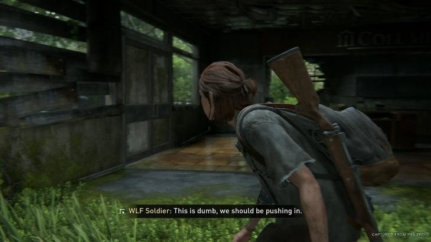
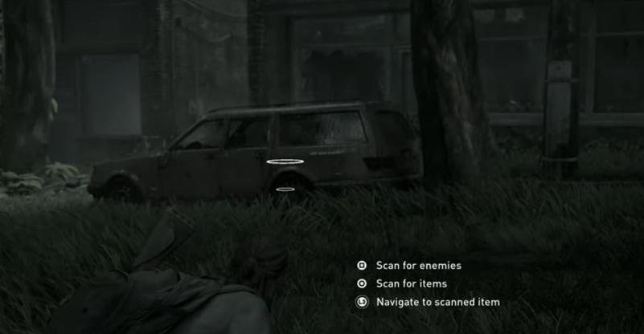
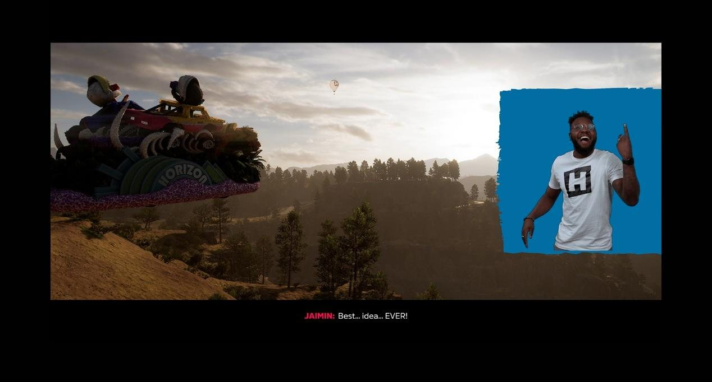

系统分析 · 个人课程作业
先问声音在游戏里扮演什么角色，再为它找到视觉或触觉的替代。
声音是许多游戏体验的重要组成部分。但对听障玩家来说，这个通道是缺失的。在许多游戏里，这会导致信息缺失、游戏体验大打折扣，在竞技游戏里还会让他们一直处于劣势。
《最后生还者 第二部》是听障无障碍设计的行业标杆。它的功能非常全面，几乎每一类音频信息都有对应的视觉替代。

字幕是面向听障玩家的经典无障碍功能，而《最后生还者 第二部》的字幕系统高度可定制：玩家可以调整字号、颜色和背景透明度，也可以开启说话者名字标签。字幕系统还有画面外说话者的方向箭头：说话的角色不在画面里时，字幕旁边会出现一个箭头，指向声音的来源。游戏还支持潜行和战斗中敌人系统性对话的字幕。

在动作和潜行游戏里，声音承载着大量实时的战斗信息：受伤的方向、敌人即将发现你的预警、从背后逼近的威胁。这些信息往往转瞬即逝，字幕来不及传达。游戏用一套 HUD 视觉系统来解决这个问题：玩家受伤时，屏幕对应的边缘会出现方向性的闪光；潜行时敌人快要发现玩家，会弹出方向性的警告；战斗中，标记会持续显示高威胁敌人的位置。
《极限竞速：地平线 5》的听障无障碍设计专注于完整地传达叙事。它用手语来传递信息，而手语才是许多听障玩家真正的母语。强迫这些玩家依赖字幕，就像强迫一个人用第二语言阅读：内容能传达，但距离感始终存在。手语表演还能传达普通字幕无法承载的语气、情绪和语境。

游戏为所有过场动画加入了画中画的手语翻译，有美国手语和英国手语两种，由来自听障社区的演员表演。玩家可以在无障碍设置里选择偏好的手语，并自由调整翻译窗口的位置和背景颜色。
Playground Games 在开发早期就请来了听障社区的顾问，并确保演员使用自然流畅的美国手语和英国手语，而不是逐字的机械翻译。这体现了一种平等对待听障玩家的态度：他们应该用自己的语言体验游戏完整的叙事。
《瘟疫传说：安魂曲》提供了一个把音频转换成手柄触觉反馈的功能：「语音转振动」选项会把角色的对话转换成手柄的振动反馈。这让听障玩家能通过触觉感受到有人在说话，感受对话的节奏，在某种程度上参与到叙事的脉动中。
现代游戏手柄的触觉反馈越来越精确，PS5 的 DualSense 就是一个典型例子，而触觉是听障玩家可以真正利用的感官通道。如果触觉反馈能被更系统地设计，用不同的强度和节奏对应不同类型的音频信息，它就能成为一个独立的感官通道，而不只是视觉信息的备份。
对听障玩家来说，无障碍设计的核心目标，是为听觉通常传达的内容提供替代的感知方式，主要通过视觉和触觉。
在我看来，要做好这件事，设计者需要先回答一个问题：在我的游戏里，声音具体扮演什么角色？不同类型的声音在游戏系统中承担不同的作用，需要不同的解决方案。大致可以分为三类：
| 声音的类型 | 它的作用 | 替代方案 |
|---|---|---|
| 叙事与对话配音 | 让叙事内容更容易被接收和理解；配音还在文字之外加入了情绪态度、语气变化和角色个性。一个角色「愤怒地」和「平静地」说同一句话，在文字上可能看不出区别，在音频里却一听就懂。 | 手语和手柄振动都值得探索，因为它们都能传达情绪本身，而不只是内容。成本更低的做法是「更完整的字幕」：大多数游戏的字幕只记录说话的内容，如果加上情绪标签，例如「[艾莉，愤怒地]」「[远处，微弱的抽泣声]」「[背景音乐：紧张感上升]」，听障玩家就能通过阅读感受到一个时刻的情绪温度，而不只是接收信息。这几乎不需要修改游戏机制。 |
| 潜行、射击、冒险游戏中的环境音 | 告诉玩家视野之外的空间状态：敌人是否在靠近，危险来自哪个方向。这是听障玩家最容易处于劣势的一类。 | 可视化是一种处理方式，但我认为触觉在这里也很有潜力：用手柄不同部位的振动对应来自不同方向的威胁，会比在画面上叠加 HUD 指示更直观、更有沉浸感，玩家不需要分散任何视觉注意力，就能通过手柄的触感感知威胁的方向。 |
| 反馈与确认音 | 例如捡起物品的声音、战斗中的命中确认音。它们确认玩家的操作已经被系统接收，并传达结果，例如攻击有没有命中。 | 一般可以用闪光、粒子、跳出的数字等视觉效果，或命中时的短振动这类触觉反馈来替代。许多游戏已经默认提供这类视觉反馈；但从无障碍的角度，仍然值得测试只能依赖视觉反馈的玩家是否觉得它不清楚或不完整。 |
截图来自对应的游戏，仅用于设计分析。